UX Design
With a passion for creating intuitive and impactful user experiences, I specialize in designing digital products that are both functional and visually engaging.
My approach is rooted in empathy for the user, ensuring each interaction feels seamless and natural. From wireframing to prototyping, I combine creativity and strategy to deliver designs that not only look good but also solve real-world problems.
SkiPS
SkiPS is a mobile app that helps skiers find their friends at the mountain. The app also allows users to explore the trails maps and terrain of their favorite mountains.
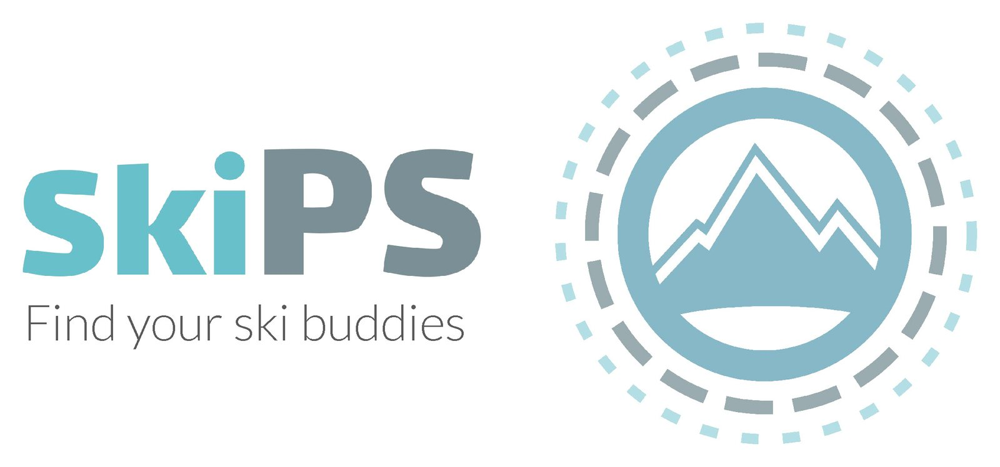
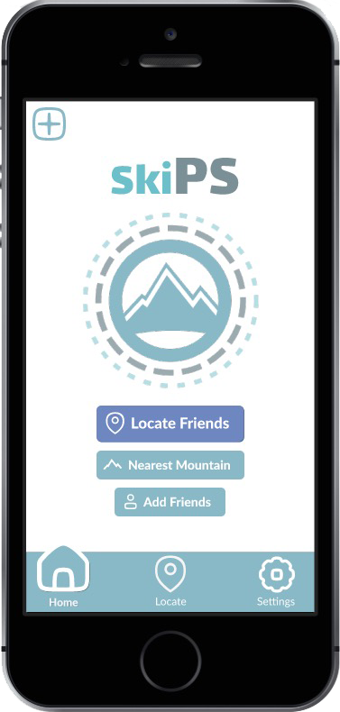
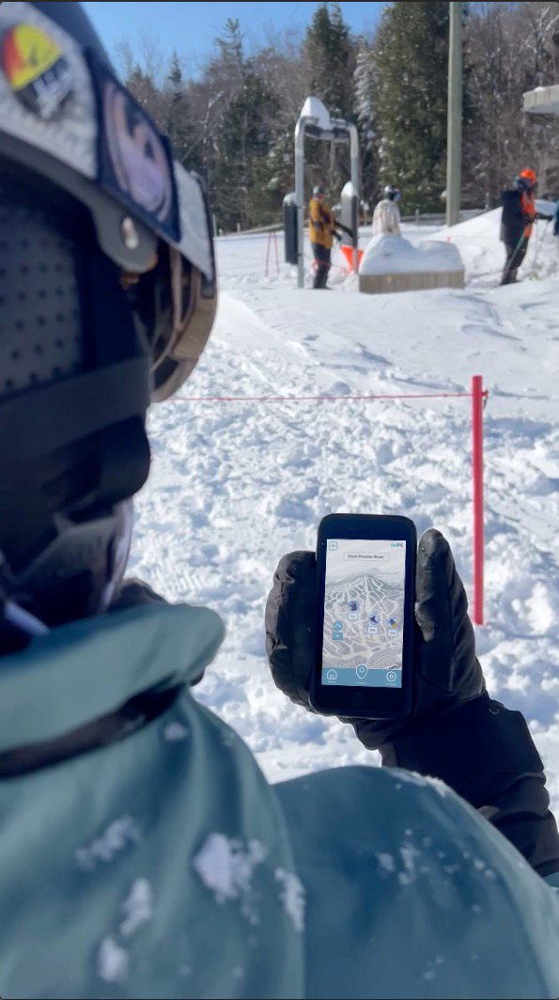
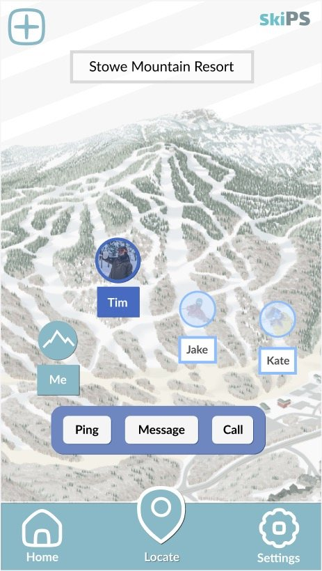
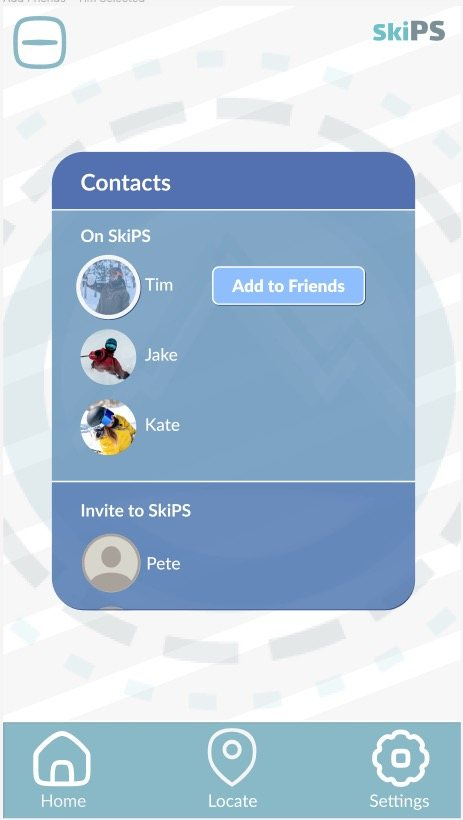
Try out the app!
- Look around the trail map of the nearest mountain and view the key stats.
- Checkin on where your friends are and get in touch with them to meet up.
- View your profile and update your settings and preferences.
- Add to your contacts by sending invites to join you on the app.
Design Process
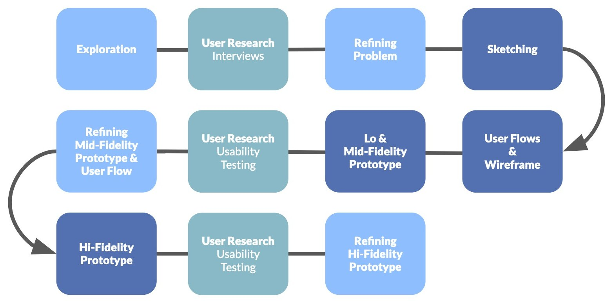
Style Guide
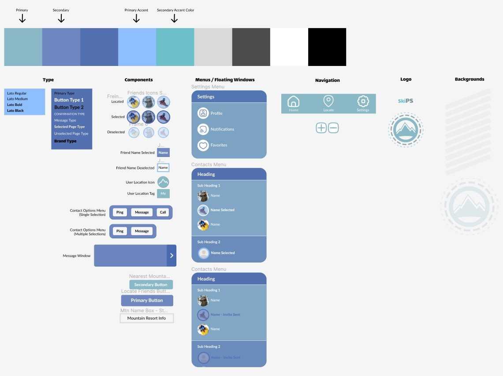
UI Elements
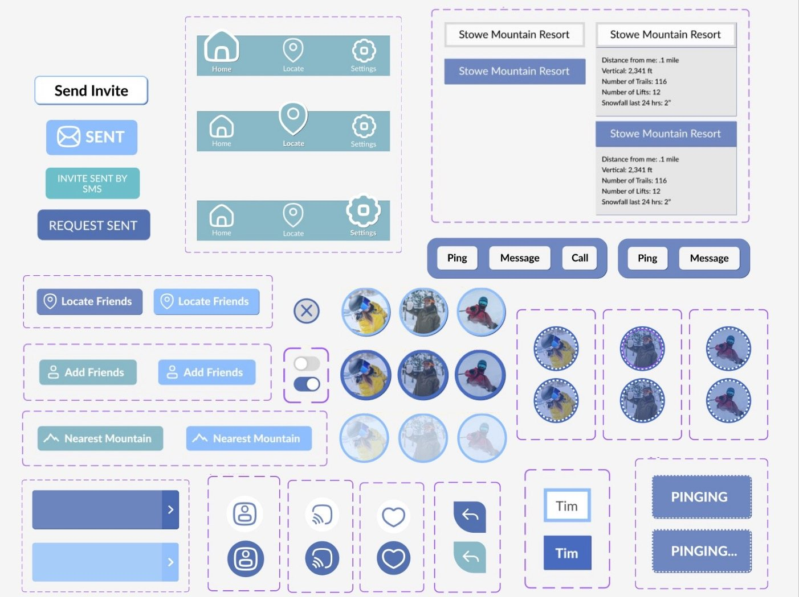
Research
Affinity Map
Among the interviews conducted, what kept coming up was that, for them, skiing is a social activity, and they preferred to ski with companions vs. skiing alone.
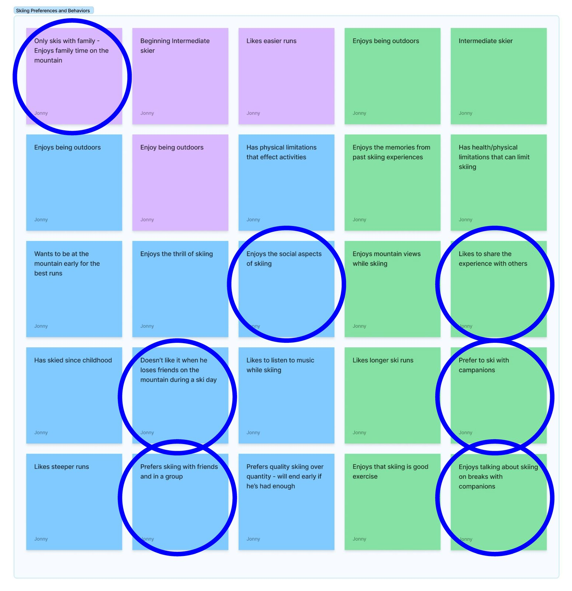
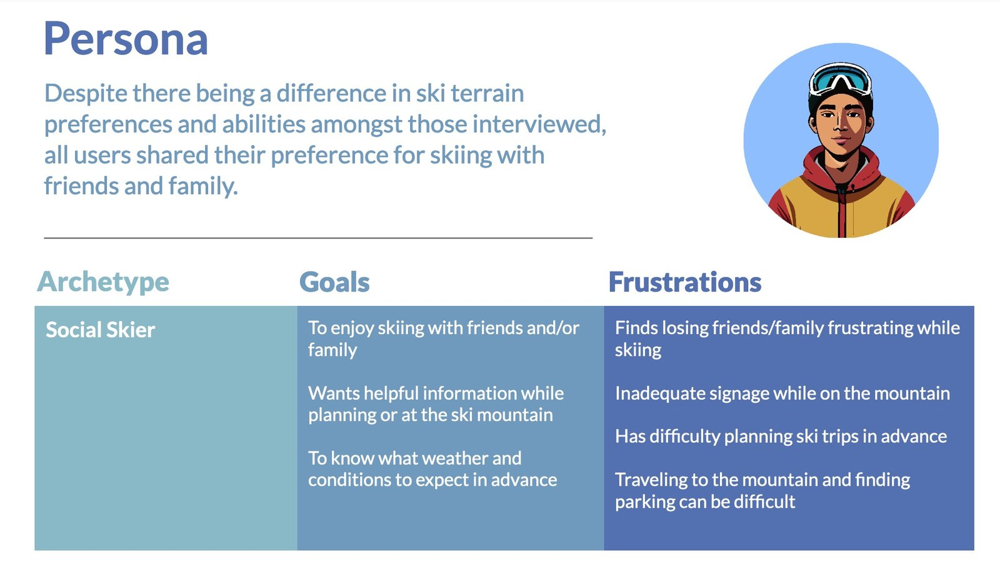
Sketches, Wireframing, and Prototyping
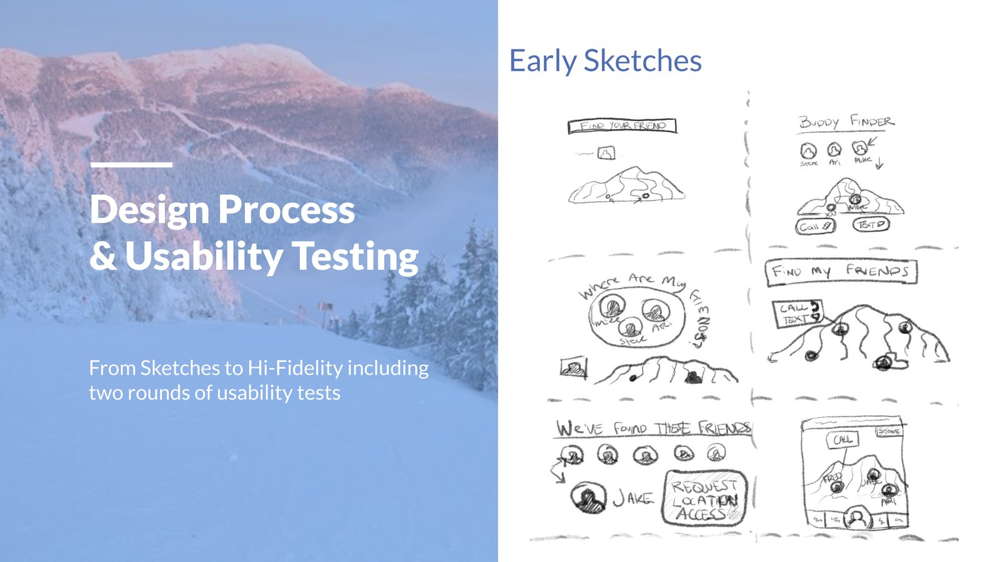
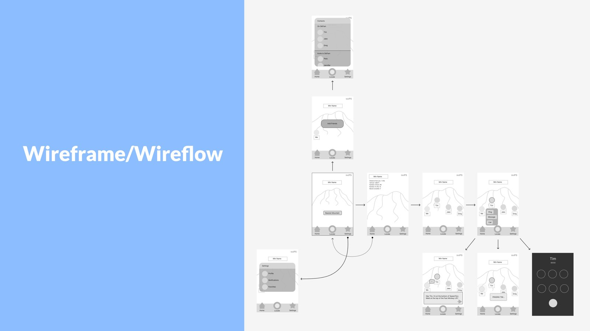
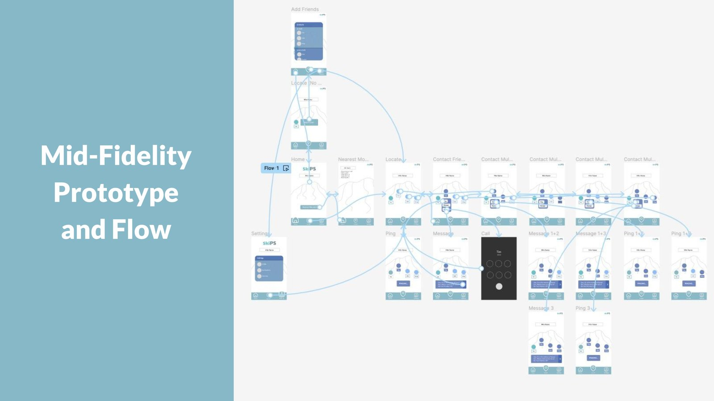
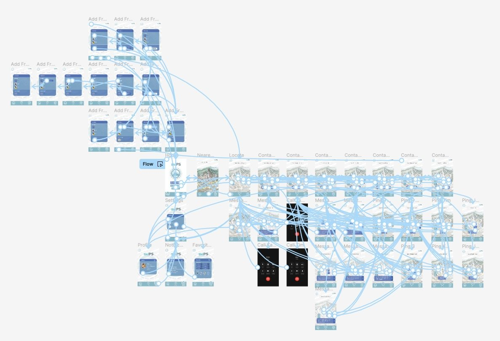
AutoExpreso
An interface design for AutoExpreso, a platform that allows drivers in Puerto Rico to access to their accounts and pay for parking.
This version is a prototype for a kiosk interface to be used as designated stations.
OpenToon
OpenToon is a mobile app that acts a companion tool for guitarists. The app provides detailed charts for different chords voicings as well as a tuner.
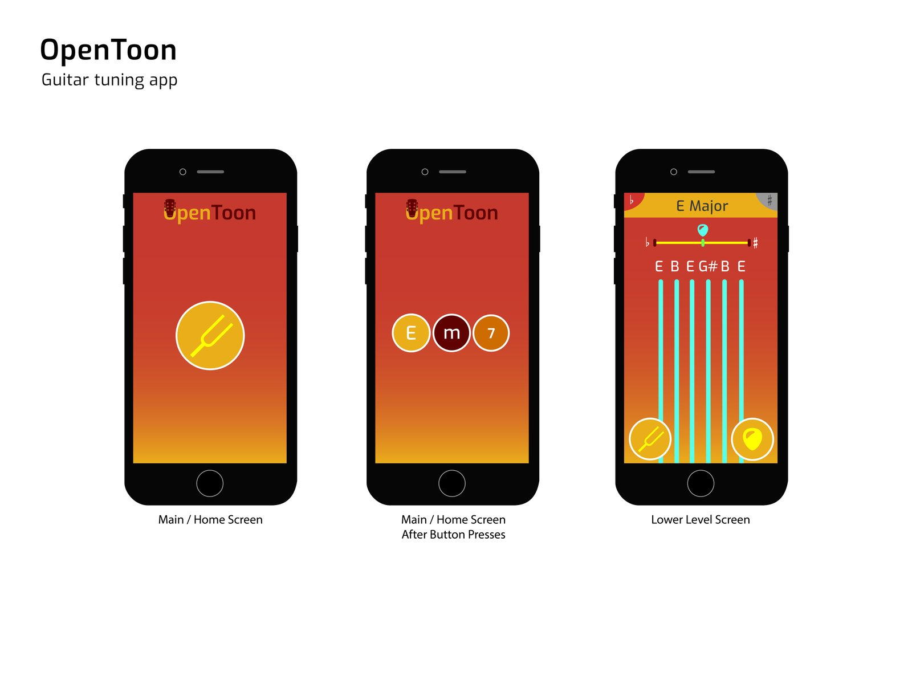
The interface adjusts based on prompts from the user to narrow down the to the desired chord.
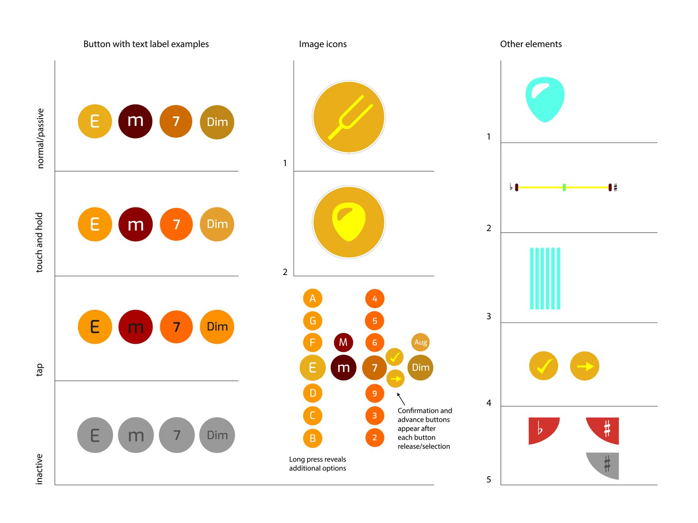